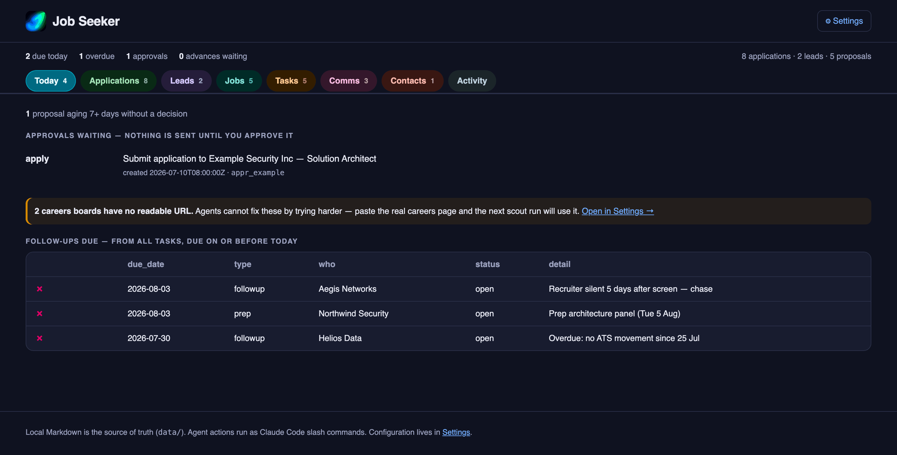
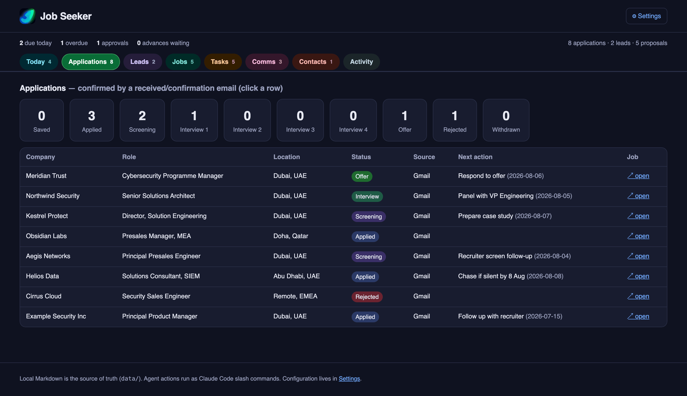
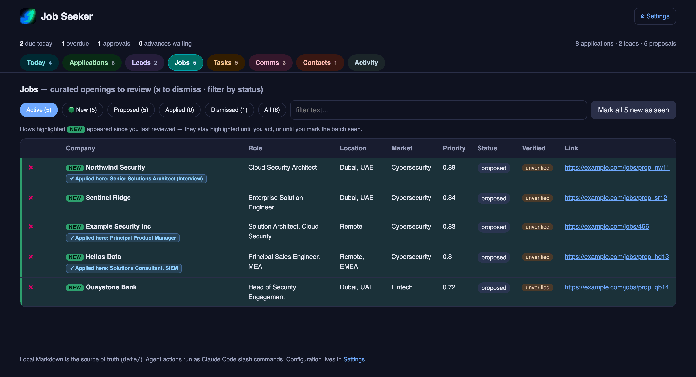
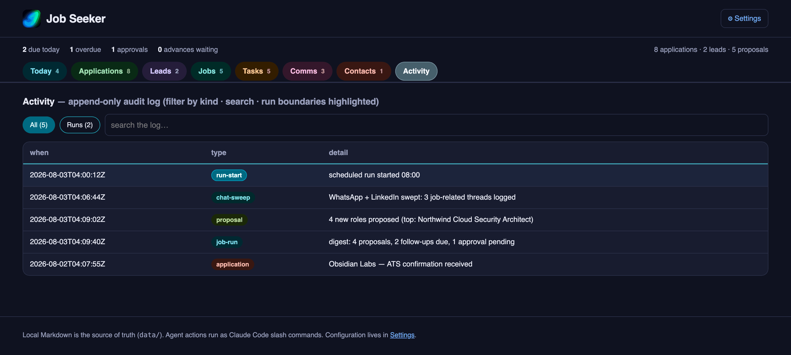

How it works
One assistant.
A small team behind it.
You never have to think about any of this. You talk to one assistant, in plain English, and it works out who should handle what.
Behind that single conversation there are eight specialists, each with one job and no ability to wander outside it. The one that reads your email cannot send anything. The one that finds jobs cannot apply to them. That separation is the whole safety story, and it is why you can let this run every morning without watching it.
Talking to it
Just ask.
There is no syntax to learn. You say what you want and the right specialist picks it up:
- jobseeker, any news today?
- jobseeker, find me product roles in Dubai.
- what have I got due this week?
- draft a follow-up to the recruiter at Aegis.
- close the things I have already done.
The team
Eight specialists, one job each.
- The inbox watcher. Reads your email and calendar and notices the things that matter — a recruiter replying, an application moving a stage, an interview invite — and writes them down so you do not have to. It can read your mail. It cannot send any.
- The chat watcher. Checks WhatsApp and LinkedIn for job-related messages. It reads the message list from the outside without opening your conversations, because opening one marks it read and destroys your own sense of what you still owe a reply to.
- The researcher. Works out which companies are worth your time in a market you care about — cybersecurity, fintech, whatever you tell it — and keeps a ranked list, scored against what you are actually looking for.
- The scout. Goes and finds real, live openings at those companies, and scores each one against your CV so you get a number instead of a hunch. It never applies to anything.
- The form filler. When you decide to apply, it fills the application form in your own browser using your CV and your saved answers, then stops and shows you everything. Nothing is submitted until you say so.
- The drafter. Writes your follow-up messages — email, LinkedIn or WhatsApp — in your voice, and hands them to you to approve. It will not send a message you have not read.
- The bookkeeper. Notices when you have already done something and closes it. A referral offered on WhatsApp and fulfilled by email three days later is the same task, and this is the one that joins them up so it stops nagging you.
- The second pair of eyes. Reviews everything at the end of a run and flags what is off — the same job listed twice, a conflict, something quietly overdue. It only ever looks and reports.
The dashboard
And a place to see all of it.
Most days the message on your phone is enough. When you do want the detail, it is all here — every job application and where it stands, the roles found for you and how well each one matches, your email and whatsapp conversations, what is due, and a log of everything the agents have done.




When it runs
Every morning, or whenever you ask.
On a schedule. Pick a time and it runs by itself on your Mac — checks your channels, refreshes the research, looks for new roles, tidies up what is finished, and sends you a digest on WhatsApp. You wake up to a short message telling you what is new and what you owe someone today.
Or by hand. Anything you can schedule, you can also just ask for. Run the whole routine on demand, or ask for one piece of it — check my inbox, find me roles, draft this follow-up.
One honest caveat. The scheduled run cannot read WhatsApp and LinkedIn on its own, because reading those needs your real browser, open and logged in, so you need to give permission to the agent to perform these tasks on a browser - instructions are provided - Everything else works unattended. When you are at your Mac, ask Claude to check your chats and it catches up in a minute.
A scheduled run never applies to a job and never sends a message. If something needs a decision, it waits in a queue for you rather than guessing. There is more on that in what it never does.
Then what
Set it up once.
JobSeeker has no account and no service of its own — it borrows the connections you already have. But you will need a Claude subscription. Do not worry though, you can set spending limits so the agents will not overconsume your quota. Setting it up is mostly a matter of granting it permission to look at things you are already logged in to, and it takes a few minutes.